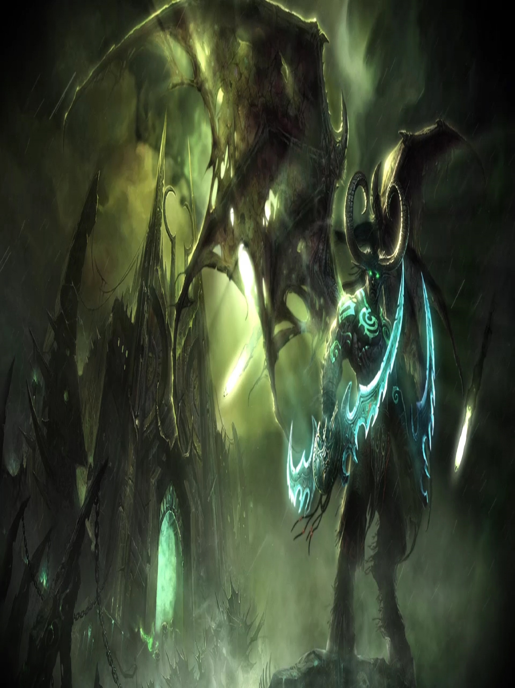
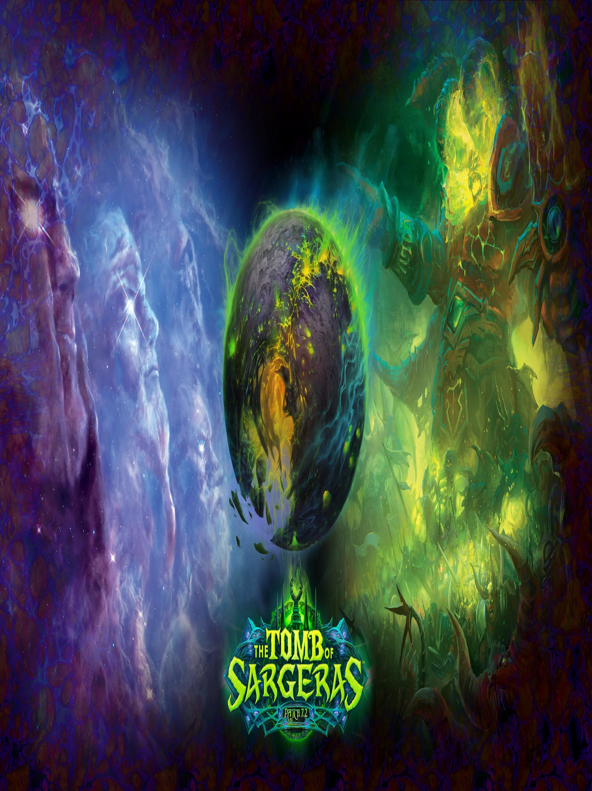

За WoW
Съюзът е една от двете основни фракции на смъртните раси в Азерот. Съюзът се състои от мощни култури и групи, обвързани не от отчаяние или необходимост, а от абстрактни понятия като благородство и чест.[4] Преди време Съюзът е бил обединение от кралства на хора, джуджета и върховни елфи на субконтинента Лордерон (най-северната част от континента Източни кралства (Eastern Kingdoms) и е известен под името „Съюз на Лордерон“.
След като Кел'Тузад и неговия „Култ на Обречените“ освобождават „чумата на смъртта“, която опустошава Лордерон, Съюзът е принуден да премести по-голямата част от силите си в Калимдор и южните части на Източните кралства на континента Каз Модан. Въпреки, че народите които остават в Лордерон губят огромна част от силите си, те остават лоялни на Съюза с надеждата за връщане на предишната слава. С времето нови членове и раси се присъединяват към Съюза, като допълнително увеличават обединената сила.
- Друид (Druid) – Друидите са защитниците на природата. Те могат да се трансформират в: Bear (мечка), Cat (котка), Travel Form (форма с която се придвижваш по-бързо), Moonkin Form (взема се ако си на талантите Balance), Tree of Life (научава се след 40 похарчени талант-точки в Restoration tree). Има три вида таланти – Balance (специализиран в магическите атаки), Feral Combat (специализиран в трансформациите на животни) and Restoration (лечител). Те следват пътя на древният полубог Ценариус. Първият друид е Малфурион Стормрейдж.
- Ловец (Hunter) – Ловецът е клас който е най-силен при битка от разстояние. Може да опитомява животни, които да му служат вярно в неговите цели. Освен това може да изплозва различни капани (Trap), които имат различен ефект.
- Магьосник (Mage) – Магьосниците са орден с многовековна история. Слабо представящи се в ръкопашен бой, но може би най-силни с магии. Те могат да извличат космически сили и да унищожават противницте си с огън и лед. Столицата на маговете е Даларан, който след излизането на втория експанжън (Wrath of The Lich King) е летяща крепост в сърцето на Northrend.
- Паладин (Paladin) – Паладините са шампионите на Светлината. Като свещени рицари те могат еднакво добре да лекуват и да се борят срещу неправдата със силни бойни и защитни магии.
- Свещеник (Priest) – Може да се играе като лечител ако е развит на Holy/Discipline (таланти) или Shadow, което го превръща в офанзивен далекобоен клас.
- Крадец (Rogue) – Основният ръкопашен DPS (щета за секунда), той главно разчита на бързата игра, зашеметяването и промъкването. Може да слага на оръжията си отрови, които имат силно неприятен ефект за противника му.
- Шаман (Shaman) – Използва завидно силни далекобойни магии, но може да бъде развит като ръкопашен DPS-er (герой който нанася щета за секунда) или силен поддържащ лекар. Използва тотеми на четирите елемента – въздух, вода, огън, земя. Те могат да се трансформират в Wolf (вълк)
- Вещер (Warlock) – Владее до съвършенство тъмните изкуства на разрушението, демонологията, проклятията. Може да призовава демони които да му помагат в битка.
- Войн (Warrior) – Владее до съвършенство всички видове оръжия. Може да бъде използван като танк (тоест да поема щетите в голяма битка) или като унищожител, когато се добере до противника си нанася огромни количества щети и трудно бива спрян.
- Рицар на Смъртта (Death Knight) – Хибриден клас, съчетание от воин и магьосник. Много силен войн, способен да носи най-тежките брони в играта (plate) и има унищожителни магически умения. В група може да бъде използван като танк (да поема ударите на врага върху себе си) или като DPS (да нанася поражения на враговете). Използва еднакво добре едноръки и двуръки мечове и брадви. Има способността да призовава немъртви на своя страна да му помагат.
- Монах (Monk) - Когато пандарените са били подчинени от могу преди векове, монасите са довели надежда до привидно слабо бъдеще. Ограничено от използването на оръжия от своите роби, тези пандарени се фокусираха върху овладяване на чи и изучаване на бой без оръжие. Когато шансовете за революция се удариха, те бяха добре обучени да отхвърлят ярема на потисничеството.
- Ловец на демони (Demon hunter) - Учениците на Илидан Сторрадж, поддържат тъмно наследство, което плаши съюзниците и враговете си. Илидарите прегръщат вълшебните и хаотични вълшебни енергии, които отдавна заплашват света на Азерот - вярвайки, че е необходимо да оспорят Горещия легион. Като разгръщат силите на демоните, които са убили, те развиват демонични черти, които предизвикват отвращение и ужас в съратниците си.

